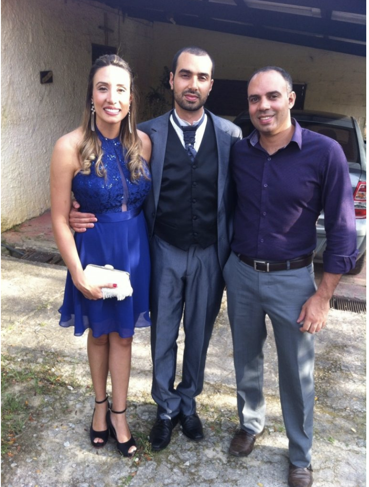

Espiritualidade
O amor não está de quarentena luz
 06 de Dezembro de 2020
06 de Dezembro de 2020
Sempre ouvi dizer em minha caminhada de Igreja que “as palavras convencem, mas são os testemunhos que arrastam”, por isso compartilho essa experiência de vida e fé com os irmãos. Em julho de 2019, eu e meu esposo, Belchior, fizemos uma viagem a Portugal para visitar alguns parentes. Durante todo tempo em que estivemos lá, diariamente, entramos em contato com os filhos pra saber como estavam aqui no Brasil. Temos três filhos, dois homens e uma mulher. Graças a Deus as notícias sempre foram positivas. Isso nos tranquilizava.
Faltando um dia para retornarmos ao Brasil, o filho mais novo, Michel, de 31 anos, nos ligou informando que o filho mais velho, Antônio, de 35, tinha sido internado. Sem informações suficientes, iniciamos, eu e meu esposo, nossas orações pelo restabelecimento de nosso filho, uma vez que, por causa da distância, não era possível fazer nada.
No outro dia, já de volta ao Brasil, nossas orações continuavam ininterruptas, porém deixando que Deus conduzisse o barco. Estávamos tranquilos. Sabíamos em quem confiar. Ao chegarmos, fomos nos inteirar da situação. Antônio sentia dores de cabeça ininterruptas já havia alguns dias. O quadro foi piorando, e a noiva, Renata, percebeu, ao acordá-lo no dia anterior, que Antônio não conseguia articular bem as palavras e estava sem coordenação motora. Após se comunicar com Michel, levaram-no até o hospital e lá ficou internado.
Já no hospital, informaram-nos que ele estava tomando antibióticos e remédios para dor. Ao vê-lo, nós nos chocamos com a realidade. Estava com os olhos murchos e parecia fora do mundo. Não era a mesma pessoa. Ele nos reconheceu, falou conosco. Assim que saímos, contudo, Renata disse que ele falava frases desconexas, como se estivesse alucinado. Às vezes, chorava com as fortes dores de cabeça. Estava esperando por uma tomografia, porque as radiografias apontavam um tumor. Era preciso confirmar. Os médicos do local não davam esperanças. Mas, como o diagnóstico principal é o do “Médico dos médicos”, permanecíamos confiantes.
Renata conhecia uma das enfermeiras do local e, por meio dela, conseguiu ficar numa cadeira ao lado dele durante quatro dias, sem sair, apenas rezando, rezando e rezando. Não queria deixá-lo sozinho. Eu chegava bem cedo ao estacionamento e ficava lá praticamente o dia todo, esperando que Renata me trouxesse notícias, que não eram muito alentadoras. A enfermeira chegou a dizer que tirasse ele de lá, porque o hospital não tinha recursos para tratar adequadamente aquele caso.
O que nos sustentava é que toda nossa família, os amigos, as congregações, irmãs, padres e bispos conhecidos de todo o Brasil estavam numa corrente de oração e nós sentíamos essa força. Meu esposo rezava e buscava alternativas para retirá-lo daquele lugar. Deus sempre enviando seus anjos. Belchior foi levado a uma senhora simples e humilde que movimentou céus e terra, e conseguiu levá-lo para outro hospital para fazer tomografia.
Com o laudo apontando uma lesão no cérebro, conseguiu uma internação no Hospital das Clínicas. Após uma série de exames, a equipe médica disse que, no mundo, havia somente vinte casos como o de Antônio: um abscesso cerebral provocado por um dente de siso. Foi preciso operar para sugar o líquido do abscesso que pressionava o cérebro e extrair o siso causador de todo aquele problema. Nossas orações continuavam. Pedíamos a intercessão da Virgem Maria, que Ela o cobrisse com seu manto de amor, pois havia o risco de ele ficar com sequelas graves. Graças a Deus, deu tudo certo. A dor de cabeça começou a ceder.
Os exames continuavam, enfim monitoravam tudo. Mas, um dia, a dor de cabeça voltou e deixou todos muito apreensivos. Uma nova tomografia acusou ainda um resto de líquido. Aumentaram a dose do antibiótico.
Enfim, seu estado melhorou. Ele se alimentava bem, não sentia dores, conversava e recebia a visita da família toda, inclusive do diretor da empresa onde trabalha e de sua filha, Júlia, de 11 anos, deixando-o muito feliz.
Ao fim de dois meses, ele finalmente pôde sair do hospital; com a graça de Deus, sem sequelas. Voltou a trabalhar e a realizar suas atividades normalmente. Em tudo demos graças a Deus.
Durante todo o tempo oferecendo o terço a Nossa Senhora e pedindo sua intercessão, Antônio nos revelou que, por duas vezes, havia passado pelo quarto uma senhora muito simpática, que o cumprimentava pelo nome, perguntava se ele estava bem e, sorrindo, desejava melhoras e ia embora. Conversando com as atendentes do quarto, procurou pela senhora e pela descrição. Ninguém sabia quem era e não a conheciam. Guardamos tudo isso no coração, agradecendo a Virgem que também foi mãe, a Mãe de nosso Salvador, por tanto carinho. Não temos dúvidas sobre a valorosa intercessão de Maria.
Confiamos cada vez mais na força da oração. A oração nos fortalece, aproxima-nos dos irmãos e nos anima a caminhar e a aceitar os desígnios do Pai. Tudo que Deus permite é bom. Hoje vejo toda minha família, esposo, filhos, noras e netos unidos em oração na missa dominical e me emociono, agradecida por tantas bênçãos recebidas.
Suely Pereira da Silva Belchior
Casada há 38 anos com Antônio Manuel Belchior. Formada em Comunicação Social e Turismo e licenciada em História. Junto com a família, é missionária leiga, membro do Instituto Missionário Catolicanet.
Artigos Anteriores